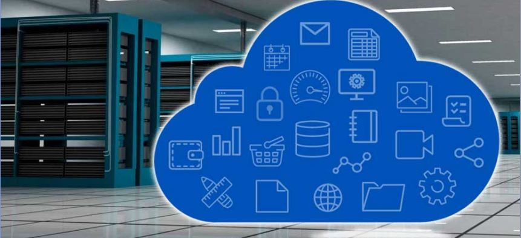

De acuerdo con la definición del NIST (National Institute of Standards and Technology)(Instituto Nacional de Estándares y Tecnologías)
El cómputo en la nube es un modelo para crear acceso conveniente, ubicuo y bajo demanda, vía internet, a un conjunto compartido de
recursos de cómputo configurables (por ejemplo, redes, servidores, almacenamiento, aplicaciones y servicios), los cuales pueden ser
rápidamente asignados y provistos con un mínimo de gestión administrativa e interacción con el proveedor.
Este modelo promueve la disponibilidad; tiene cinco características esenciales, tres modelos de servicio y cuatro modelos de despliegue.
Características esenciales
Autoservicio bajo demanda
Los usuarios pueden proveerse de capacidades computacionales (por ejemplo, tiempo en servidor o redes, almacenamiento, etcétera)
conforme las requieran, sin asistencia por parte del proveedor de esos servicios.
Acceso a la red
Disponibilidad de la red con accesoa internet, usando dispositivos estándares (por ejemplo, teléfonos móviles, laptops, etcétera).
Conmutación de recursos
Modelo multipropietario que conmuta recursos a varios usuarios.
Rápida elasticidad
Capacidad de los usuarios para aumentar o disminuir rápidamente las capacidades demandadas a la nube.
Servicio medido
Uso de los recursos cuantificado, controlado y reportado, lo que facilita a los usuarios pagar
con base en el consumo de cada tipo de servicio (por ejemplo, almacenamiento, proceso, ancho de banda, etcétera).
Tipos de Servicio
Nu-Tec -
Software como servicio (software as a service, SaaS).
Capacidad provista al usuario para emplear los programas y las
aplicaciones del proveedor ejecutados en la infraestructura de la nube. Tales aplicaciones son accesibles desde diferentes dispositivos a través de una interfaz de cliente ligera
como un navegador web (por ejemplo, el correo electrónico
basado en la web). El usuario no administra ni controla la
infraestructura de nube subyacente como la red, los servidores, sistemas operativos, almacenamiento o incluso capacidades de aplicaciones individuales, con la posible excepción
de algunas limitadas configuraciones específicas que le
son permitidas.
Plataforma como servicio (plataform as a service, PaaS).
Capacidad ofrecida al usuario para desplegar sobre la infraestructura de nube, aplicaciones desarrolladas o adquiridas
con lenguajes y herramientas de programación aportados
por el proveedor. El consumidor no gestiona ni controla la
infraestructura de nube subyacente como redes, servidores,
sistemas operativos, o de almacenamiento, pero tiene control sobre las aplicaciones desplegadas y posiblemente
las configuraciones de entorno del alojamiento de esas
aplicaciones.
Infraestructura como servicio (infrastructure as a service, IaaS).
Capacidad ofrecida al
usuario para proveerle procesamiento, almacenamiento, redes y otros recursos informáticos fundamentales donde el usuario es capaz de
instalar y ejecutar software a voluntad, como sistemas operativos y aplicaciones. El usuario no administra ni controla la
infraestructura de la nube subyacente pero tiene el control de los
sistemas operativos, almacenamiento, aplicaciones desplegadas y
algún control limitado de componentes de red seleccionados
(por ejemplo, cortafuegos de servidores).
Patrones de Diseño
Nu-Tec -
Nube privada.
La infraestructura de la nube es operada únicamente por una organización. Puede ser manejada por la misma
organización o por un tercero dentro o fuera de las instalaciones de ésta.
Nube comunitaria.
La infraestructura de nube es compartida por varias organizaciones y apoya a una comunidad específica
que comparte ciertas afinidades (por ejemplo, la misión, los requisitos de seguridad, políticas u objetivos).
Puede ser administrada por la organización o por un tercero, y puede estar ubicada en las instalaciones o fuera de ellas.
Nube pública.
La infraestructura de la nube pertenece a una organización que vende sus servicios en la nube; está disponible al público en general o a un gran grupo industrial.
Nube híbrida.
La infraestructura de nube es una agregación de dos o más tipos de nubes (privada, comunitaria o pública) las cuales siguen siendo entidades únicas,
pero unidas por tecnología estandarizada o propietaria que permite la portabilidad de datos y aplicaciones (por ejemplo, dispersión de
recursos dentro de la nube para balancear la carga entre ellas).
Estandares de Servicio

Nu-Tec -
Es muy importante saber sobre los estándares en la nube cuando contratamos este servicio, debido a que se incluyen temas como privacidad, confidencialidad, ubicación, propiedad de los datos, uso no autorizado de los datos y los acuerdos de nivel de servicio.
Los estándares para los servicios de Computación en la Nube, pueden ser divididos en dos clases: estándares prescriptivos y estándares evaluativos.
Los estándares prescriptivos se refieren a los estándares de comunicaciones, tales como los protocolos TCP, IP, SNMP, HTTP, entre otros.
Por otra parte, los estándares evaluativos se refieren a estándares de calidad de los sistemas de Cloud Computing, los cuales se encargan de describir y evaluar los procedimientos seguidos en los procesos en general,
como es el caso de la familia de estándares ISO 9000 y procedimientos específicos para seguridad de la información, como los de la familia ISO 27000.
Algunos aspectos de calidad de los proveedores de Servicios en la nube incluyen características medibles como: tiempo de actividad, rendimiento, disponibilidad, seguridad, privacidad, cumplimiento, servicio al cliente y portabilidad.
Se trata de los requisitos generales y los casos de uso de la computación en la nube; Infraestructura como Servicio (IaaS), la Red como un Servicio (NaaS) y el escritorio como servicio (DaaS); también la interconexión entre nubes, la gestión de extremo a extremo de los recursos y la infraestructura Cloud.
Plataformas Tecnologicas
Nu-Tec -
Amazon Elastic Compute Cloud (EC2)
Amazon Elastic Compute Cloud (Amazon EC2) es un servicio web que proporciona capacidad informática con tamaño modificable en la nube. Está diseñado para facilitar a los desarrolladores recursos informáticos escalables y basados en web. Amazon EC2 reduce el tiempo necesario para obtener y arrancar nuevas instancias de servidor en minutos, lo que permite escalar rápidamente la capacidad, ya sea aumentándola o reduciéndola, según cambien sus necesidades. Amazon EC2 cambia el modelo económico de la informática, al permitir pagar sólo por la capacidad que utiliza realmente. Amazon EC2 presenta un auténtico entorno informático virtual, que permite utilizar interfaces de servicio web para iniciar instancias con distintos sistemas operativos, cargarlas con su entorno de aplicaciones personalizadas, gestionar sus permisos de acceso a la red y ejecutar su imagen utilizando los sistemas que desee.
Windows Azure
Es una plataforma de nube abierta y flexible que permite compilar, implementar y administrar aplicaciones rápidamente en una red global de centros de datos administrados por Microsoft. Puede compilar aplicaciones en cualquier lenguaje, herramienta o marco, permitiendo además integrar sus aplicaciones de nube públicas con el entorno de TI existente.
Google App Engine
Google App Engine permite crear y alojar aplicaciones web en los mismos sistemas escalables con los que funcionan las aplicaciones de Google. Google App Engine ofrece procesos de desarrollo y de implementación rápidos, y una administración sencilla, sin necesidad de preocuparse por el hardware, las revisiones o las copias de seguridad y una ampliación sin esfuerzos. Las aplicaciones Google App Engine son fáciles de crear, fáciles de mantener y fáciles de escalar a medida que el tráfico y las necesidades de almacenamiento de datos crecen. Con App Engine no es necesario mantener ningún servidor. Basta con cargar su aplicación y esta ya se encontrará lista para servir a los usuarios.
Red Hat Openshift
OpenShift es la oferta de plataforma como servicio para Computación en la nube de Red Hat. En esta plataforma los desarrolladores de aplicaciones pueden construir, desplegar, probar y correr sus aplicaciones. Prporciona espacio en disco, recursos de CPU, memoria, conectividad de red y un servidor Apache o JBoss. Dependiendo del tipo de aplicación que se está construyendo, también proporciona acceso a una plantilla de sistema de archivos para esos tipos (por ejemplo PHP, Python y Ruby/Rails). También proporciona herramientas de desarrollo integradas para apoyar el ciclo de vida de las aplicaciones, incluyendo la integración de Eclipse, JBoss Developer Studio, Jenkins, Maven y GIT. OpenShift utiliza un ecosistema de código abierto para proporcionar servicios clave de la plataforma de aplicaciones móviles (Appcelerator), servicios NoSQL (MongoDB), servicios de SQL (PostgreSQL, MySQL), y más. JBoss proporciona una plataforma de middleware empresarial para aplicaciones Java, proporcionando apoyo para Java EE6 y servicios integrados tales como transacciones y mensajes, que son fundamentales para las aplicaciones empresariales.
IBM SmartCloud
SmartCloud ofrece una gestión de cloud con el valor agregado que permite la elección y la automatización más allá del aprovisionamiento de máquinas virtuales. IBM SmartCloud Enterprise+ es un entorno Cloud seguro, totalmente administrado y listo para producción, diseñado para garantizar una alta performance y disponibilidad. SmartCloud Enterprise+ ofrece un control completo de «governance», administración y gestión, permitiendo definir acuerdos de nivel de servicio (SLA) para alinear las necesidades de negocio y los requisitos de uso. Ofrece además múltiples opciones de seguridad y aislamiento, integrados en la infraestructura virtual y de red, manteniendo el cloud separado de otros entornos cloud.
VM Cloud Suite
La virtualización de VMware ha ayudado a los clientes a reducir drásticamente los gastos de capital gracias a la consolidación de servidores. Ha mejorado los gastos de explotación mediante la automatización y ha minimizado la pérdida de ingresos porque reduce el tiempo de inactividad, planificado y no planificado. Sin embargo, las empresas actuales también necesitan reducir el tiempo de comercialización de sus productos y servicios. Las unidades de negocio exigen acceso rápido a los recursos de TI y a las aplicaciones. Se presenta a continuación (figura 2.3), la solución para la nube propuesta por VMware, y también un cuadro que define las responsabilidades de cada uno de los productos para la gestión e infraestructura de la nube.
Openstack
OpenStack es un conjunto de proyectos de software de código abierto que las empresas / proveedores de servicios pueden usar para configurar y ejecutar su nube de computación e infraestructura de almacenamiento. Rackspace y la NASA son los contribuyentes iniciales clave para la pila. Rackspace contribuyó con su plataforma «Archivos en la Nube» (código) para alimentar la parte de almacenamiento de objetos de OpenStack, mientras que la NASA aportó su plataforma «Nebulosa» (código) para alimentar la parte Compute. El Consorcio OpenStack ha logrado tener más de 100 miembros, incluyendo Canonical, Dell, Citrix, etc en menos de un año. OpenStack hace que sus servicios se encuentren disponibles por medio de una API compatible con Amazon EC2/S3. Por lo tanto, las herramientas cliente escritas para AWS se pueden utilizar con OpenStack.
Seguridad e Interoperabilidad
Nu-Tec -
La característica principal de un Servicio Web es que le permite cierto grado de flexibilidad, accesibilidad y interoperabilidad. Esto permite que los desarrolladores abstraigan la lógica de negocio y se centren en el desarrollo del servicio sin preocuparse de los criterios anteriormente citados.
El Instituto de Ingenieros Eléctricos y Electrónicos (IEEE) define interoperabilidad como la habilidad de dos o más sistemas o componentes para intercambiar información y utilizar la información intercambiada
La característica principal de un Servicio Web es que le permite cierto grado de flexibilidad, accesibilidad y interoperabilidad. Esto permite que los desarrolladores abstraigan la lógica de negocio y se centren en el desarrollo del servicio sin preocuparse de los criterios anteriormente citados.
Como objetivos básicos a cubrir por la seguridad de un servicio en la nube
Es necesario asegurar que existe una autenticación mutua entre el cliente que accede a los servicios web y el proveedor de dichos servicios.
Se debe mantener una política de autorización del acceso a recursos y, más importante, a operaciones y procesos en un entorno en el que debe administrarse y controlarse el acceso de clientes, proveedores, vendedores, competidores y los posibles ataques que reciban de personal externo.
Mantener al cliente identificado, de manera que se identifique una sola vez y pueda acceder a servicios en diversos sistemas, sin que resulte necesario identificarse nuevamente en cada uno de ellos.
Controlar y asegurar la confidencialidad de los datos intercambiados, ya que SOAP no es capaz de cifrar la información, la cual viaja en claro a través de la red.Es necesario asegurar la comunicación con algún estándar que permita crear un canal seguro de comunicación. El estándar ya firmemente establecido de creación de canales seguros SSL y el cifrado de partes específicas de documentos mediante el cifrado XML son las direcciones que se están siguiendo en este terreno.
Se debe asegurar la integridad de los datos, de manera que estén protegidos a los posibles ataques o a manipulaciones fortuitas. En este campo se está utilizando el estándar de firmas XMLDSIG, que permiten la firma de partes específicas del documento XML.
Comprobar que no se repudian las operaciones, para lo cual es necesario mantener firmas en XML.